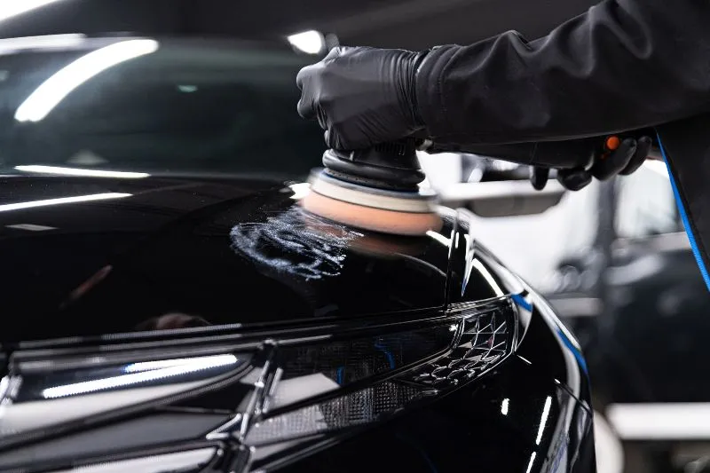

Gwarantują najwyższą jakość wykonania usług detailingowych.
Powłoki ceramiczne dla twojego samochdou
Powłoki ceramiczne
Powłoki ceramiczne to specjalne powłoki ochronne, które są
nanoszone na powierzchnie samochodów, aby zapewnić lepszą ochronę
lakieru i zwiększyć trwałość pojazdu. Powłoki ceramiczne są
zazwyczaj wykonane z krzemionki, a ich głównym zadaniem jest
ochrona lakieru przed uszkodzeniami mechanicznymi, takimi jak
zarysowania, zadrapania
Czytaj dalej

Korekta lakieru Polerowanie lakieru
Korekta lakieru
Usługa skierowana dla pojazdów, których lakier stracił swój
pierwotny blask lub stał się matowy, co gorsze porysowany. Do
uszkodzeń powłoki lakierniczej najczęściej dochodzi poprzez
nieodpowiednie mycie karoserii lub przy zastosowaniu
nieodpowiednich środków chemicznych. Na pogarszający stan lakieru
ma również wiele czynników zewnętrznych tj.
Przyciemnione szyby to nie tylko wizualny efekt lecz praktyczne
rozwiązanie dla każdego. Przyciemnione szyby nadadzą charakteru
twojemu auto ale również polepsza ekonomię zużycia paliwa dzięki
zmniejszeniu nagrzewania się wnętrza pojazdu. Na rynku istnieje
wiele typów folii samochodowych począwszy od zwykłych folii
barwionych...
Folie ppf (paint protecion film) to na dzień dzisiejszy jedyna
najskuteczniejsza ochrona lakieru twojego samochodu. Folia ta
zapewnia wysokie właściwości ochronne na zadrapania, zarysowania,
obicia, otarcia. Jest przeźroczysta i praktycznie niewidoczna.
Położona na twoim samochodzie zapewni na stałe wyrazistość koloru.
U nas nie ma miejsca na półśrodki. Stworzyliśmy pakiet na start,
będący bazą do bieżącej pielęgnacji auta. Pakiet polega na
przywróceniu salonowego stanu twojego auta. Na usługę składa się
pełna dekontaminacja i deironizacja lakieru i felg, detailingowe
mycie każdego zakamarku pojazdu oraz zabezpieczenie karoserii
sealant'em na okres ..